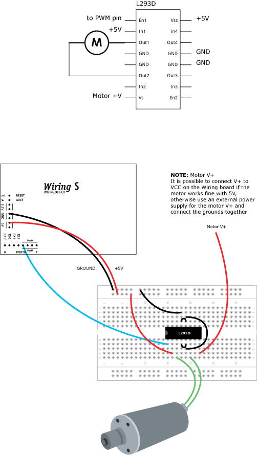

This example is for Wiring version 1.0 build 0100+. If you have a previous version, use the examples included with your software. If you see any errors or have comments, please let us know.
Driving a DC motor from a graphical user interface by BARRAGAN http://barraganstudio.com
Read data from the serial and turns a DC motor on or off according to the value On Wiring v1 boards the PWM capable pins are: 29, 30, 31, 35, 36 and 37 On Wiring S board the PWM capable pins are: 4, 5, 6, 7, 19 and 20
Read data from the serial and turns a DC motor on or off according to the value On Wiring v1 boards the PWM capable pins are: 29, 30, 31, 35, 36 and 37 On Wiring S board the PWM capable pins are: 4, 5, 6, 7, 19 and 20

char val; // Data received from the serial port int motorpin = 4; // Wiring: Connect L293D Pin En1 connected to pin PWM 4 void setup() { pinMode(motorpin, OUTPUT); Serial.begin(9600); // Start serial communication at 9600 bps } void loop() { if (Serial.available()) // If data is available, { val = Serial.read(); // read it and store it in val if (val == 'H') // If 'H' was received, { analogWrite(motorpin, 125); // turn the motor on at medium speed } else if (val == 'L') // If 'L' was received { analogWrite(motorpin, 0); // turn the motor off } } delay(100); // Wait 100 milliseconds for next reading } /* Processing code for this example // Write data to the serial port according to the status of a button controlled // by the mouse import processing.serial.*; Serial port; // Create serial port object boolean rectOver = false; int rectX, rectY; // Position of square button int rectSize = 100; // Diameter of rect color rectColor; boolean buttonOn = false; // Status of the button boolean firstTime = true; void setup() { size(200, 200); noStroke(); rectColor = color(100); rectX = width/2 - rectSize/2; rectY = height/2 - rectSize/2; // List all the available serial ports in the output pane. // You will need to choose the port that the Wiring board is // connected to from this list. The first port in the list is // port #0 and the third port in the list is port #2. println(Serial.list()); // Open the port that the Wiring board is connected to (in this case #2) // Make sure to open the port at the same speed Wiring is using (9600bps) port = new Serial(this, Serial.list()[2], 9600); } void draw() { // Wait 3 seconds for the Wiring board to start if (firstTime) { delay(3000); firstTime = false; } update(mouseX, mouseY); background(0); // Clear background to black fill(rectColor); rect(rectX, rectY, rectSize, rectSize); } void update(int x, int y) { if (overRect(rectX, rectY, rectSize, rectSize) == true) { rectOver = true; } else { rectOver = false; } } void mouseReleased() { if (rectOver == true) { if (buttonOn) { rectColor = color(100); buttonOn = false; port.write('L'); // Send an L to indicate button is OFF } else { rectColor = color(180); buttonOn = true; port.write('H'); // Send an H to indicate button is ON } } } boolean overRect(int x, int y, int width, int height) { if ((mouseX >= x) && (mouseX <= x+width) && (mouseY >= y) && (mouseY <= y+height)) { return true; } else { return false; } } */